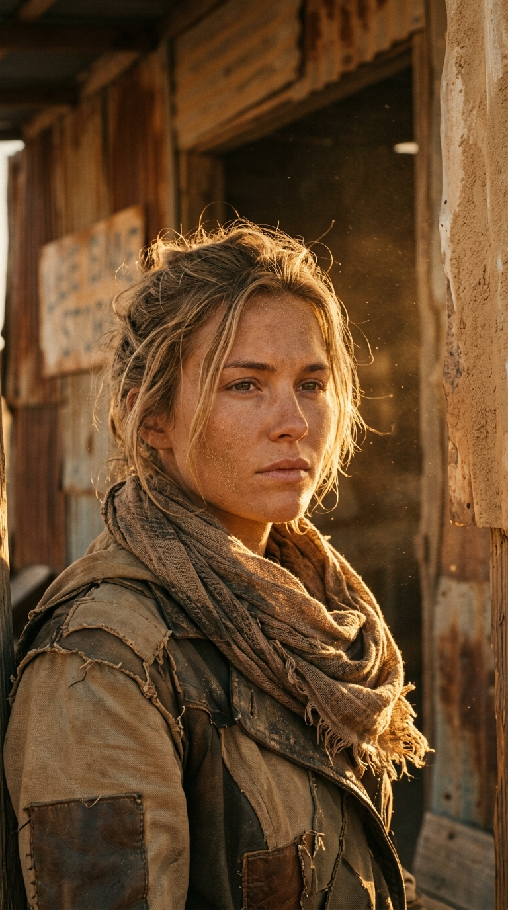

After
Chosen,
not guessed.
not guessed.
Post Apocalyptic. Golden Hour. Close-Up.
Same generator. Every setting picked before anything is generated.
Generated with Gemini. Prompt written in the app.
